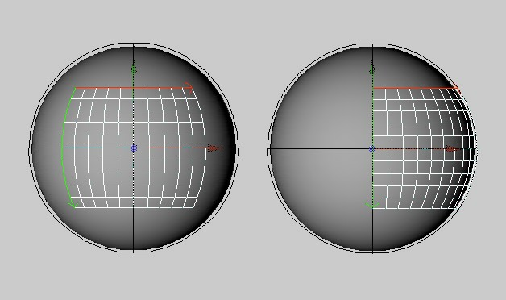
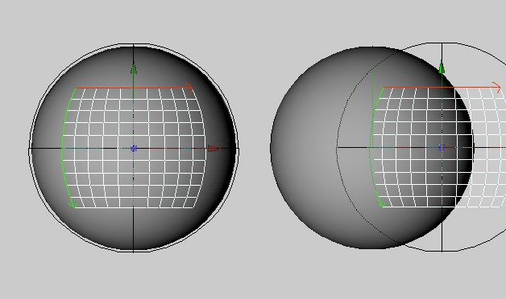

Function available in CINEMA 4D Prime, Visualize, Broadcast, Studio & BodyPaint 3D
Coordinates
On this page of the Attribute Manager, you will find the settings that control the texture’s position, scale and rotation. You can also change these values interactively in the viewports (with the Texture and
Figures 1 and 2 demonstrate the difference between the Texture tool and the Texture Axis tool. Both pictures demonstrate a movement in the X direction. In Figure 1 the texture is moved about the texture envelope (Texture tool, Offset). In Figure 2 the texture geometry itself is moved (Texture Axis tool, Position).
Figure 1: The texture has been moved about the texture envelope.. |
Figure 2: The texture geometry itself has been moved. |
The texture geometry is represented in the viewport as a colored grid.